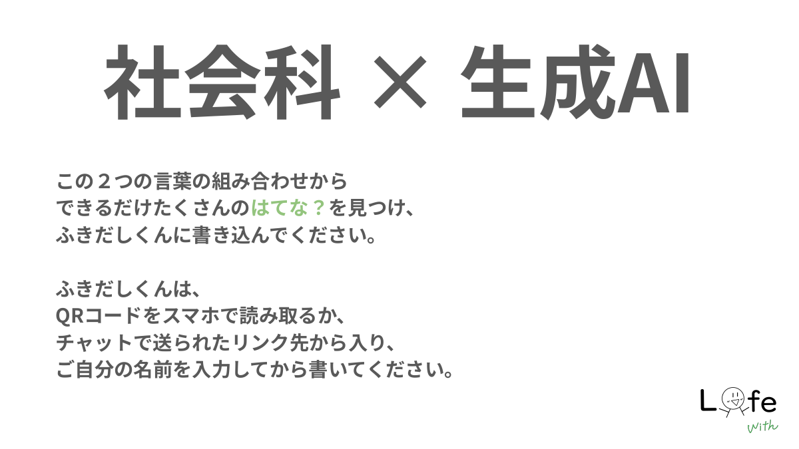
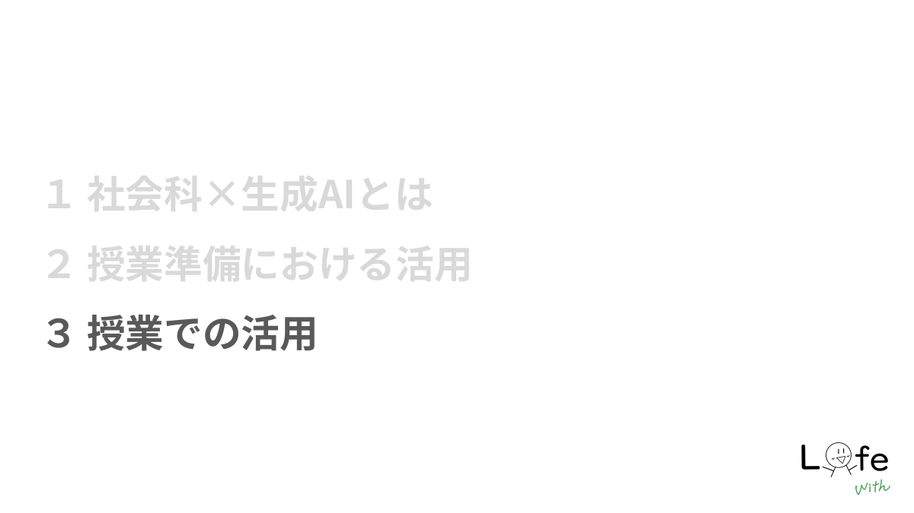

研修用WebAppを開く
社会科×生成AIの「はてな？」を書き出す入口として使います。
WebAppを開くMaterials
参加者がスマホでも押しやすいよう、主なリンクをカード化しています。
Workshop Flow
「ツール紹介」ではなく、社会科の授業づくりの中で生成AIをどう位置付けるかを扱います。

まず「はてな？」を出し、AIを使う前に社会科の学びそのものを問い直します。
地域素材の下調べ、資料の言い換え、単元Webサイト、計画づくりまで扱います。

児童の成果物へのフィードバック、振り返り分析、児童向けプロンプト集を考えます。
Prompt Cards
研修の内容を、授業準備でそのまま試せる形にしました。検索してコピーできます。
Related Works
今回の研修とつながる、すでに公開済みの教材・道具箱です。